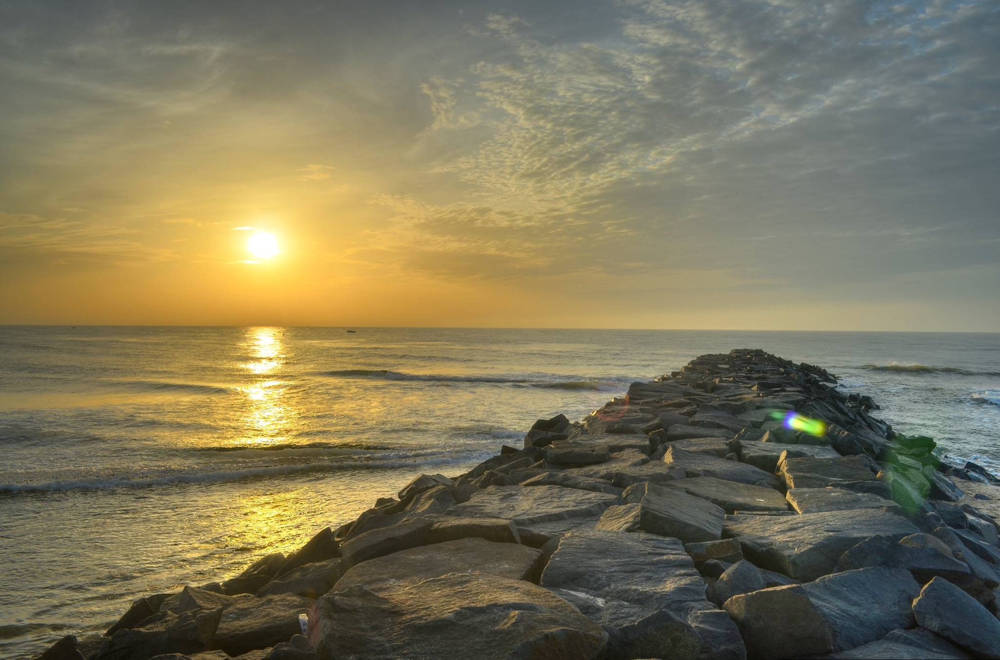

-
 Tadiandamol Treck
Tadiandamol Treck
23rd - 24th July 2016 -

Pondicherry
23rd - 24th July 2016

Gokarna trek was an ultimate experience for me with Nature Walkers.The place is mesmerizing and peaceful.Many a times we feel like not coming back. The NW organizers Hemant,Amrita and Manoj were our energy boosters throughout and the trek seem to b so smooth with them.Salute u guys fr d entire support. Guys dont giv a second thot fr d place and NW,just go and u will enjoy to d fullest. Also I earned so many new frns which will b a treasure forever.luking frwd fr some more exciting trips with NW.:-)
Sonali (Gokarna)
I joined these guys for the Kodachadri trek. It is always nice to be around passionate people but these guys are easily the liveliest bunch i have ever met. The place itself was absolutely beautiful, the forest trail, the waterfall, view from the peak and the sunset, i will never forget all those and certainly not how we all huddled together around the camp fire that night! As a bonus gift, that place has the most beautiful night sky ever! The trip was so amazing, by the time i reached home i felt so positive, happy and recharged. If you love walking and is searching for a great weekend trip, these are the guys you are looking for! Have a great trip.
Devika Krishnan (Kodachadri,Gokarna)
Have done trekking with other groups as well but I felt this as different in terms of craziness with lots of fun and got amazing friends, with them the journey for trek becomes so easy. I will just say that if you are going with Nature walkers you are not going to enjoy only Nature but also the walkers who are going along with you and their helping hands. Thanks you NatureWalkers for awesome trek to Kodachadri with great fun, looking forward for more treks with you guys.
Dewesh Dubey (Kodachadri)
This is my first experience of Trekking and I am happy that I completed with the team “Nature Walker”. It was a great experience. The support, the zest of the team was really significant. Organizer team is overwhelming. Here I like to take opportunity to thank each and every one from bottom of my heart. All were awesome in helping, caring nature. I started this trip with just 39 unknown; but I am back with 39 best human being I ever met, my best trekking buddies. My best wishes for the Team “Nature walker…Hemanth, Sudeept, Manoj and Amrita”. A trip well spent with Nature Walker to cherish forever. Love you all…
Preeti Bhuyan (Kudremukh)
Trekking!!!?? A scary word for an indoor person like me...going out for 2 days with unknown people was another unexplored experience. However the desire to see Gokarna & to test my physical boundaries made me sign up my hubby & myself for this trek. Now I can proudly say that It was one of the best decisions of my life. Not only did we have a great weekend, we came away with memories to cherish. Hemant and Manoj who organised this trip put us to ease right away. I have found my motivation to get back in shape & get healthy and fit. Looking forward to many more such treks, awesome experiences, making and cherishing more friends. Kudos to Nature Walkers!!!! Looking forward to many more such awesome experiences.
Sumathi Arun (Gokarna)
This was my first long distance trek with a group of strangers filled with a great deal of energy and enthusiasm. It was important to know the group well before we trek together. Hemanth and team just knew what to do to overcome it. We had a drill in the bus to introduce ourselves to the group with a pinch of fun.That is it. Strangers became friends. who knew that a small religious town called Gokarna would turn out to be so splendid and rich. Had I not trekked, I wouldn't have seen the beauty of Gokarna. We trekked through the rugged cliffs, secluded cove and sand. The trek was pretty tiring.But the sense of satisfaction we got every time we reached a beach was priceless.
prithviraj Shetty (Gokarna)
Have been going to new and serene places with friends since long, but never knew, just joining Nature Walkers could make such a hell of difference. Noticed, awesome co-ordination, amazing companions and right balance of fun and DISCIPLINE of trekking. Both the organizers, Hemant & Amrita pay attention to each individual, couple and group alike. They support, push, encourage, motivate and do whatever it takes for the entire group to complete the track with a sense of pride and achievement. Cheers to Nature Walkers. Intend to continue with them forever !!
Rohit Sharma (Gokarna)